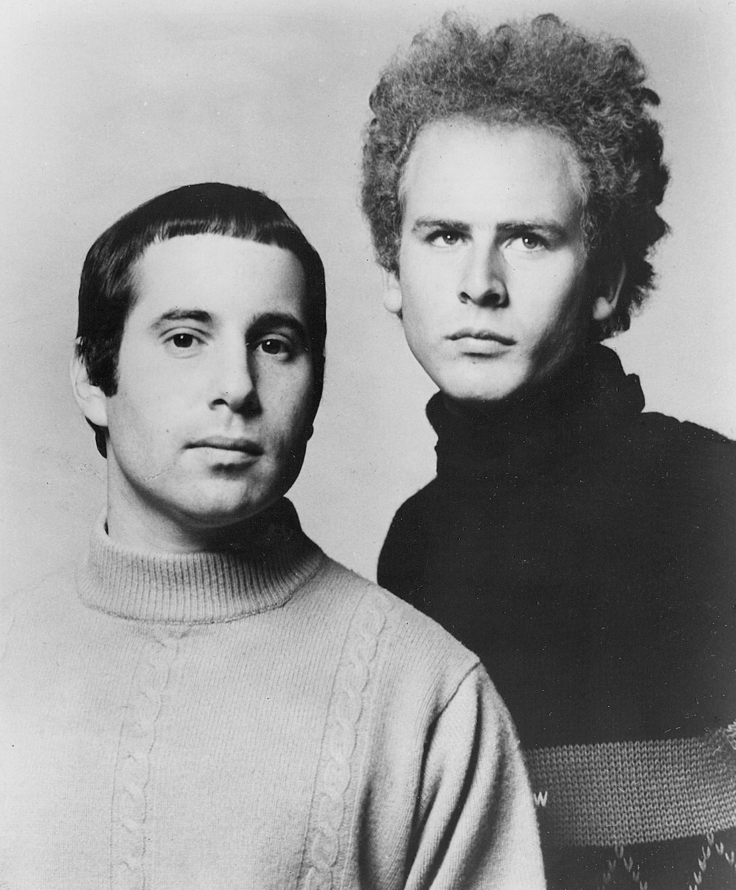

The Boxer by Simon & Garfunkel is the 1969 Paul Simon song that reached No. 7 on the Billboard Hot 100.
It grew from the sting of early criticism, a hotel Bible and a chorus with no words.
Columbia released it as a single on March 21, 1969.

Table of Contents
- The Story Behind the Song
- Recording The Boxer
- The Lie-La-Lie Chorus
- The Chart Run
- Legacy and Covers
- FAQ
The Story Behind the Song
Answering the Critics
Simon & Garfunkel were riding "Mrs. Robinson" when Simon wrote this one.
Success had brought their first sharp reviews, mostly from folk purists.
Simon told Playboy, "I think the song was about me: everybody's beating me up."
He said it took a few years for people to see them as "just two guys from Queens."
A Hotel Bible
Simon has said he wrote the second and third verses on an airline flight.
He was reading a Bible taken from a hotel.
Phrases such as "workman's wages" and "seeking out the poorer quarters" came from that reading.
The last verse switches to the third person and introduces the fighter of the title.
Recording The Boxer
Over 100 Hours
The sessions began in November 1968 and ran past 100 hours.
Work moved between Columbia's Nashville studios and New York City.
Paul Simon, Art Garfunkel and engineer Roy Halee produced.
The Players
- Curly Chalker played pedal steel guitar in unison with a piccolo trumpet.
- Charlie McCoy played bass harmonica in the second and final verses.
- Fred Carter Jr. said he tuned a small Martin to an open-G variant and fingerpicked against Simon.
- Session drummer Hal Blaine played a single beat, in the refrain.
Halee set Blaine's drums near an elevator in the Columbia offices for a huge, echoing sound.
Blaine said it "sounded like a cannon shot!"
The Lie-La-Lie Chorus
The refrain was meant to hold a place until Simon found real words.
He never replaced it.
The chorus vocals were cut in St. Paul's Chapel at Columbia University.
Garfunkel chased what he called a "high ceiling stone sound."
Simon also wrote an extra verse that missed the single.
The duo sang it live on their 1969 tour.
The Chart Run
Columbia issued the single with "Baby Driver" on the B-side.
Billboard called it a "sure fire chart topper."
It peaked at No. 7 in the US and No. 6 in the UK.
The album, Bridge over Troubled Water, followed in 1970.
See how the year played out in our 1969 music year guide.
It also sits on our best 60s songs list.
| Measure | Detail | Result |
|---|---|---|
| Billboard Hot 100 | US singles | No. 7 |
| UK Singles Chart | UK singles | No. 6 |
| RPM Adult Contemporary | Canada | No. 1 |
| Dutch chart | Netherlands | No. 2 |
| Rolling Stone | 500 Greatest Songs, 2010 | No. 106 |
Legacy and Covers
Covers and Live Moments
- Bob Dylan covered it on Self Portrait in 1970.
- Neil Diamond, Emmylou Harris and Waylon Jennings also recorded it.
- Mumford & Sons played it with Simon and Jerry Douglas in 2012.
- Simon opened Saturday Night Live with it on September 29, 2001, the first live show after the September 11 attacks.
Where It Fits
Its story-song approach carried folk rock into the end of the decade.
Read the full story in our Simon & Garfunkel biography.
Their breakthrough is told in The Sound of Silence.
The wider scene lives in the Folk Rock genre hub.
FAQ
Who wrote The Boxer?
Paul Simon wrote it.
Simon & Garfunkel recorded it in November 1968, and Columbia released it as a single on March 21, 1969.
What is The Boxer about?
Simon has said the lyrics are largely autobiographical and were written while he felt unfairly criticized.
He told Playboy, "I think the song was about me."
The first two verses follow a lonely young man in New York, and the last verse introduces the boxer.
What does the lie-la-lie chorus mean?
It means nothing.
The refrain began as a placeholder, and Simon never replaced it with words.
Is The Boxer about Bob Dylan?
Some listeners have read it as an attack on Dylan.
Biographer Marc Eliot called that reading utterly nonsensical.
Simon himself pointed to criticism of the duo as the spark.
Where was The Boxer recorded?
Sessions took over 100 hours.
They ran at Columbia's Nashville studios and in New York City.
The chorus vocals were cut in St. Paul's Chapel at Columbia University.
Few records turn a bruised ego into something so warm.
Wikipedia's entry on the song covers the history and chart details in more depth.
Press play above and hear why The Boxer by Simon & Garfunkel still lands.